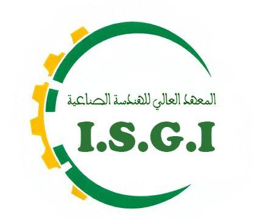
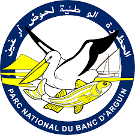
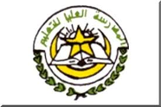

Environnement & ressources naturelles
Modélisation du transport de polluants, dynamique des nappes phréatiques et gestion durable des ressources en eau et des écosystèmes.
L'UMR AMES conçoit et applique des méthodes mathématiques, statistiques et d'intelligence artificielle pour modéliser les défis environnementaux et sanitaires de la Mauritanie.
L'UMR AMES est une unité mixte de recherche rattachée à l'Institut Supérieur de Génie Industriel (ISGI). Elle a été fondée conjointement par l'Université de Nouakchott, l'École Normale Supérieure (ENS), l'IMROP, l'ONISPA et le PNBA, conformément au décret n° 001045 fixant le cadre réglementaire des unités mixtes de recherche.
Concevoir et appliquer des méthodes mathématiques, statistiques et d'intelligence artificielle pour modéliser les défis environnementaux et sanitaires de la Mauritanie.
Les travaux de l'unité s'articulent autour de la modélisation des systèmes environnementaux et sanitaires, à l'interface des mathématiques appliquées et des sciences de la vie.
Modélisation du transport de polluants, dynamique des nappes phréatiques et gestion durable des ressources en eau et des écosystèmes.
Modèles de propagation des maladies infectieuses et nosocomiales, et aide à la décision en santé publique.
Équations aux dérivées partielles, systèmes dynamiques et méthodes numériques pour les milieux poreux et les phénomènes complexes.
Apprentissage automatique, analyse de données fonctionnelles et traitement du signal et de l'image appliqués aux sciences de l'environnement et de la santé.
L'unité est organisée en quatre équipes adaptées aux enjeux scientifiques et géographiques de la Mauritanie : deux dédiées à l'environnement (sécheresse, érosion, pollution…) et deux axées sur la santé (maladies transmissibles et non transmissibles).
Mathématiques et modélisation numérique appliquées aux défis environnementaux du pays.
EnvironnementInformatique, intelligence artificielle et systèmes d'information géographique (SIG) au service de l'environnement.
EnvironnementModélisation mathématique de la dynamique des maladies et appui à la décision sanitaire.
SantéStatistiques, IA et SIG pour l'analyse spatiale des maladies d'importance nationale.
SantéRecherchez un membre par son nom, son établissement, son grade ou sa spécialité.
| Nom | Établissement | Grade | Spécialité | |
|---|---|---|---|---|
| Marbe Begnoug | ISGI | MC | Maths appliquées | benioug@gmail.com |
| Mohamed Ahmed Sambe | ISGI | MA | Maths appliquées | bbaba2012@gmail.com |
| Zeinebou Zoubeir | ISGI | MA | Informatique | mzeinebou@gmail.com |
| Aziza Ahmedou | ISGI | MC | Statistiques | ahmedouaziza@yahoo.fr |
| Mohamed Saad Bouh Elemine Vall | ISGI | MA | Maths appliquées | saadbouh@iup.e-una.mr |
| Mohamed El Hacen Dilla Bouna | ISGI | MC | Informatique | mohdyla@gmail.com |
| Jyda Moustapha | FSEG, UN | MA | Statistiques | jyda.mintmoustapha@gmail.com |
| Yahya Mohamed | FSEG, UN | MA | Maths appliquées | yahyajidou@yahoo.fr |
| Bedin Mohamed Lemine Kerim | FSEG, UN | MA | Informatique | bedine@univ-nkc.mr |
| Mohamed Douh Begnoug | FST, UN | PH | Mathématiques | mdouh2001@yahoo.fr |
| Mohamed Hemmidy | FST, UN | MA | Maths appliquées | mohamed.hemmidy@gmail.com |
| El Banany Mohamed Mahmoud | FST, UN | MA | Informatique | medmhdbennannu@gmail.com |
| Mouna Hadrami Saleck | ENS | MA | Biologie | mouna.hadrami@live.fr |
| Dia Mamadou | IMROP | – | Environnement | madou.mr@gmail.com |
| El Hacen Mohamed El Hacen | PNBA | – | Environnement | hacen.rim@gmail.com |
| Marième Denna | ONISPA | – | Environnement | mariememintdenna@gmail.com |
| Sidi Mohamed Ahmed Ramdhane | ISGI | DCR | Maths appliquées | — |
| Hamza Mohmed Lemine | ISGI | DCR | Maths appliquées | — |
| Nom | Établissement | Grade | Spécialité | |
|---|---|---|---|---|
| Ahmed Ahmed | ISGI | Cher | Maths appliquées | ahmedmath2001@gmail.com |
| Ghoulam Mohamed Mahmoud | ISGI | MTEC | Informatique | ahmedmath2001@gmail.com |
| Mohamed Elgheith Ledhem | ISGI | MTEC | Informatique | ovadel@gmail.com |
| Enne Benhmeida | ISGI | MA | Maths appliquées | enne_sidaty@yahoo.fr |
| Moustapha Saleck | ISGI | MA | Informatique-IA | – |
| Mohamed Ahmed Sidi Cheikh | CDD | Exp | Géomatique | ouldsidicheikh@gmail.com |
| Khadijetou El Heda | FSEG, UN | MA | Statistiques | khatouahmed@yahoo.com |
| Hasna Hmoyed | FSEG, UN | MA | Statistiques | hasnaahmedou@yahoo.fr |
| Ahmed Mohameden | FST, UN | MA | Informatique | amed.mohameden@gmail.com |
| Abdoul Samba Ndongo | ISCAE | MA | Maths appliquées | abdoul_ndongo@hotmail.com |
| Mariem Jidou Khayar | ESP | MA | – | mariem_jidou@hotmail.com |
| Mariem Mohamed Abdellahi Mohamed Sultane | FST, UN | Cher | Maths appliquées | rimsultan4@gmail.com |
| Ahmed Jidou Mohamed Lemine El Bechir | FST, UN | DCR | Maths appliquées | ajidou35@gmail.com |
| Abdallahi Ahmedou Mohamed Lemine | FST, UN | EM | Maths appliquées | daddahabdallahi@gmail.com |
| Mohamed Lemine Mohamed | FST, UN | EM | Maths appliquées | medlemineb6@gmail.com |
| Zeineb Mohamed Mahmoud | FST, UN | DCR | Informatique | zeynebouelmehdi@gmail.com |
| Lalla Boulahe Chadade | FST, UN | DCR | Maths appliquées | lalaboulahe@gmail.com |
| Lemhaba Yarba Ahmed Mahmoud | ENS | PH | Biologie | ouldyarba@yahoo.fr |
Aucun membre ne correspond à votre recherche.
Abréviations : MC — Maître/Maîtresse de conférences · MA — Maître/Maîtresse-assistant(e) · PH — Professeur(e) habilité(e) · Cher — Chercheur/Chercheuse · DCR — Doctorant(e) · EM — Étudiant(e) de Master · MTEC — Membre technique · Exp — Expert(e)
Modélisation du transport et de la dégradation des polluants en milieu souterrain pour anticiper la contamination des ressources en eau.
Suivi des écosystèmes côtiers du Parc National du Banc d'Arguin par modélisation et outils de télédétection.
Articles, ouvrages et travaux des membres de l'unité.
A 3D lattice Boltzmann – phase-field model of three-phase contact line dynamics on curved boundaries. M. Benioug. Applied and Computational Mechanics, 19(1), 2025.
Three weak solutions of α₁(·),…,α_N(·) Laplacian–Schrödinger–Kirchhoff systems. A. Ahmed, M. S. B. Elemine Vall, T. Ahmedatt. Analysis and Mathematical Physics, 19(1), 15, 121 (2025).
Fractional double-phase problems with Kirchhoff-type operators and variable exponents. M. El Khayr Boukraa, M. S. B. Elemine Vall. Journal of Elliptic and Parabolic Equations, (2025).
Multiplicity results for non-homogeneous differential equations. A. Ahmed, M. S. Bouh Elemine Vall, S. Boulaaras. Complex Variables and Elliptic Equations, 1–18, (2025).
Deep Reinforcement Learning for Optimal Replenishment in Stochastic Assembly Systems. L. Sid Ahmed Abdellahi, Z. Zoubeir, Y. Mohamed, A. Haouba, S. Hmetty. Mathematics, 13, 2229, (2025).
Optimal Control and Stability Investigation of a Fractional SEIJR Approach with a Generalized Nonlinear Transmission Rate. A. J. El Bechir, M. S. B. Elemine Vall, Y. Mohamed. Journal of Applied Mathematics and Computing, in press, (2025).
Multiplicity analysis of positive weak solutions in a quasi-linear Dirichlet problem inspired by Kirchhoff-type phenomena. A. Ahmed, M. S. B. Elemine Vall. International Journal of Nonlinear Analysis and Applications (IJNAA), 16(1), 359–369, 2025.
Digitalization and Classification of Scanned ECG Using Convolutional Neural Network. A. Choumad Fall, M. H. Mohamed Dyla, M. Mohamed Saleck, N. Taleb, T. Gadi, M. Farouk Nanne. Journal of Theoretical and Applied Information Technology, 102(1), 287–296, 2024.
Analysis of COVID-19's dynamic behavior using a modified SIR model characterized by a nonlinear function. F. Habott, A. Ahmedou, Y. Mohamed, M. A. Sambe. Symmetry, 16(1448), 2024.
Global analysis for a modified SEIR model with general non-linear incidence function. Y. Mohamed, A. Ahmedou, M. S. B. Elemine Vall. Nonlinear Dynamics, 112(13), 11661–11678, 2024.
Transfer Learning Implementation on Bi-LSTM with Optimizer to Improve Non-Ferrous Metal Prices Prediction. A. Pratomo, M. O. Jatmika, Bedine Kerim, R. Budiarto. Collabits Journal, 1(1), 40–49, 2024.
Transformer-based Model for handwritten recognition of Arabic words — Al-Soudani Maghrebi script. S. A. Maouloud, M. H. Mohamed Dyla, C. Ba. Journal of Theoretical and Applied Information Technology, 101(24), 8093–8103, 2024.
Multiplicity of weak solutions for a (p(x), q(x))-Kirchhoff equation with Neumann boundary conditions. A. Ahmed, M. S. B. Elemine Vall. Journal of Applied Analysis and Computation, 14(4), 2441–2465, 2024.
The chronology of overfishing in a remote West-African coastal ecosystem. S. Y. Lemrabott et al. Ecology and Society, 29(1), 2024.
Prey availability and diet composition of wintering Black-tailed Godwits in Nijhum Dweep, Bangladesh. N. Khandakar, D. K. Das, El-Hacen M. El-Hacen, Md. S. Ali, T. Piersma. International Wader Study Group Annual Conference, Sylt, Germany, 2023.
To See, Hear and Speak: How Counts of Birds in Individual Trees Help Address the Environmental Causes of the Sahel. T. Piersma, El-Hacen M. El-Hacen. Ardea, 111(1), 2023.
Twenty years of monitoring reveal overfishing of bony fish stocks in the coastal national park Banc d'Arguin, Mauritania. S. Y. C. Lemrabott et al. Senior Journal, 33(8), 833–844, 2023.
Growth and population structure of bloody cockles Senilia senilis at Banc d'Arguin and Bijagós. El-Hacen M. El-Hacen et al. Marine Ecology Progress Series, 710, 71–83, 2023.
Minimization of elliptic non-local functionals involving p⃗(·)-Laplacian. A. Ahmed, M. S. B. Elemine Vall. Journal of Elliptic and Parabolic Equations, 9(1), 331–354, 2023.
Existence of three weak solutions for an anisotropic quasilinear elliptic problem. A. Ahmed, M. S. B. Elemine Vall. IJNAA, 14(10), 85–93, 2023.
Existence results for some generalized Sigmoid Beverton–Holt models in time scales. M. Mohamed Abdelahi, M. A. Sambe, E. Moulay Ely. Nonautonomous Dynamical Systems, 10(1), 2023.
Spectral inclusions between C₀-quasi-semigroups and their generators. A. Tajmouati, Y. Zahouan, M. B. Mohamed Ahmed. Boletim da Sociedade Paranaense de Matemática, 40, 1–7, 2022.
Semi-Fredholm and semi-Browder spectra for C₀-quasi-semigroups. A. Tajmouati, Y. Zahouan, M. B. Mohamed Ahmed. Boletim da Sociedade Paranaense de Matemática, 22(2), 1–13, 2022.
Local spectral theory for α-times integrated semigroups. A. Tajmouati, F. Barki, M. B. Mohamed Ahmed. Rendiconti del Circolo Matematico di Palermo Ser. 2, 71, 21–37, 2022.
Fossilized diatoms as indirect indicators of the origin of carbon stored in intertidal flats. El-Hacen M. El-Hacen et al. Frontiers in Marine Science, 9, 2022.
Microbial communities in developmental stages of lucinid bivalves. S. Zauner et al. ISME Communications, 2(1), 2022.
Otsu's Thresholding for Semi-Automatic Segmentation of Breast Lesions in Digital Mammograms. M. Mohamed Saleck et al. IJACSA, 13(10), 368–375, 2022.
A Study for Remote Monitoring of Water Points in Mauritania Based on IoT (LoRa) Technology. H. A. Abeidi et al. IJEEI, 10(2), 398–409, 2022.
Perturbed nonlinear elliptic Neumann problems in anisotropic Sobolev spaces with variable exponents. M. S. B. Elemine Vall, A. Ahmed. Le Matematiche, 77(2), 465–486, 2022.
Mangrove-mudflat connectivity shapes benthic communities in a tropical intertidal system. K. J. Meijer et al. Ecological Indicators, 130, 108030, 2021.
Coastal protection assessment: a tradeoff between ecological, social, and economic issues. E. Trégarot et al. Ecosphere, 12(2), 2021.
Important Features of CICIDS-2017 Dataset for Anomaly Detection in High Dimension and Imbalanced Class Dataset. K. Kurniabudi et al. IJEEI, 9(2), 498–511, 2021.
Securing IoT Network against DDoS Attacks using Multi-Agent IDS. Bedine Kerim. Journal of Physics: Conf. Ser. (ICCAI 2020), 2021.
A Comprehensive Overview of Privacy and Data Security for Cloud. N. Akhtar et al. IJSRSET, 8(5), 113–152, 2021.
Strongly nonlinear elliptic unilateral problems without sign condition and with free obstacle in Musielak–Orlicz spaces. A. Talha et al. Revista Colombiana de Matemáticas, 55, 43–70, 2021.
New extensions of Cline's formula for the generalized Drazin–Riesz inverses. A. Talha et al. Revista de la Unión Matemática Argentina, 60(2), 567–572, 2021.
Some new properties on λ-commuting operators. A. Talha et al. Italian Journal of Pure and Applied Mathematics, 41, 149–157, 2019.
Existence of Renormalized Solutions for Some Strongly Parabolic Problems in Musielak–Orlicz–Sobolev Spaces. A. Talha, A. Benkirane, M. S. B. Mohamed Ahmed. Nonlinear Dynamics and Systems Theory, 19(1), 97–110, 2019.
Entropy solutions for strongly nonlinear parabolic problems with lower order terms in Musielak–Orlicz spaces. A. Talha, M. S. B. Mohamed Ahmed. Acta Mathematica Universitatis Comenianae, 2, 201–228, 2019.
Multiplicity of solutions for a class of Neumann elliptic systems in anisotropic Sobolev spaces with variable exponent. M. S. B. Mohamed Ahmed, A. Ahmed. Advances in Operator Theory, 4(2), 497–513, 2019.
Interaction between biofilm growth and NAPL remediation: A pore-scale study. M. Benioug et al. Advances in Water Resources, 125, 82–97, 2019.
Aucune publication ne correspond à votre recherche.
École CIMPA sur la modélisation mathématique des écoulements et du transport de polluants dans les sols et les nappes souterraines. Site de l'école →
Atelier sur la modélisation des écoulements polluants, réunissant les équipes de l'unité.



ISGI — Institut Supérieur de Génie Industriel
BP 880, Nouakchott, Mauritanie